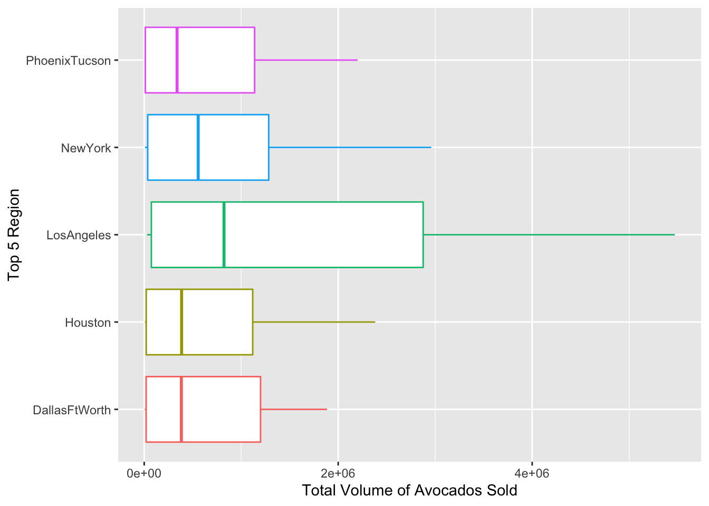
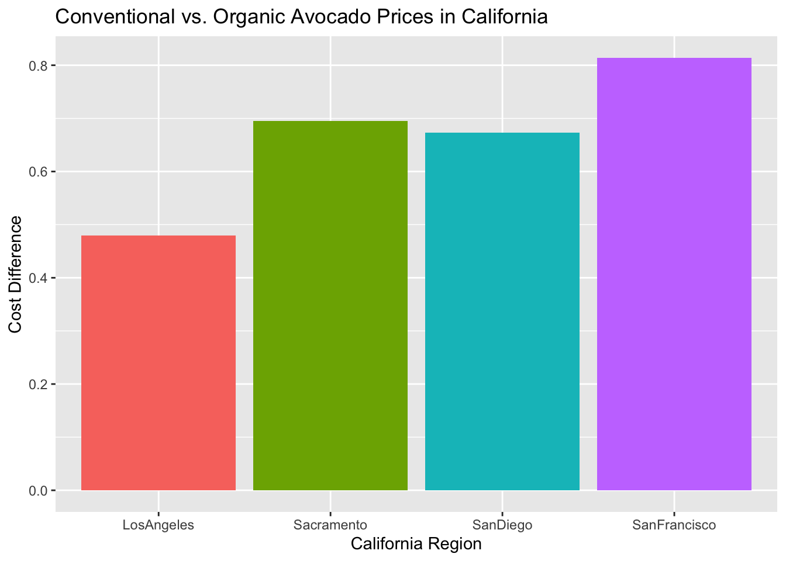
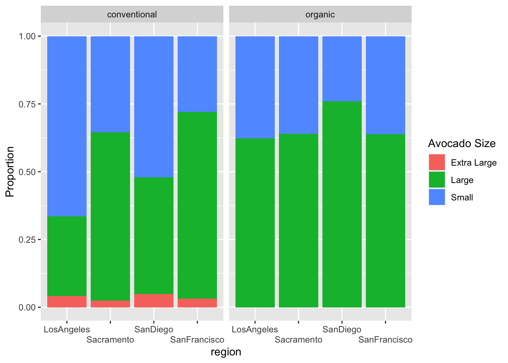

Show code
library(tidyverse)
library(tidyselect)
library(here)
avocados <- read_csv(here::here("datasets", "avocado.csv"))library(tidyverse)
library(tidyselect)
library(here)
avocados <- read_csv(here::here("datasets", "avocado.csv"))The data set was taken from the Hass Avocado Board website in May 2018. The data provide information on the average price of different types and sizes of avocados in locations across the U.S.
avocados_clean <- avocados |>
rename("Extra Large" = `4770`,
"Large" = `4225`,
"Small" = `4046`) state <- data.frame("state" = c("California", "SouthCarolina"))
region <- data.frame("region" = c("Midsouth", "Northeast", "Plains", "SouthCentral","Southeast", "West", "GreatLakes"))avocados_cities <- avocados_clean |>
anti_join(state, by = c("region" = "state")) |>
anti_join(region, by = "region") |>
filter(region != "TotalUS")avocados_region <- avocados_clean |>
semi_join(region, by = "region")avocados_region |>
filter(type == "organic",
year == 2017) |>
select(Small, region) |>
group_by(region) |>
summarize(mean = mean(Small)) |>
slice_max(mean)# A tibble: 1 × 2
region mean
<chr> <dbl>
1 West 35287.The West sold the most small Hass avocados in 2017.
avocados_clean <- avocados_clean |>
separate(col = Date,
into = c("Year", "Month", "Day"),
sep = "-",
convert = TRUE,
remove = FALSE)
avocados_clean |>
group_by(Month) |>
summarize(mean = mean(`Total Volume`)) |>
slice_max(mean)# A tibble: 1 × 2
Month mean
<int> <dbl>
1 2 1018825.February was the month with the highest volume of avocados sold.
avocados_cities |>
group_by(region) |>
summarize(mean = mean(`Total Volume`)) |>
slice_max(mean, n = 5)# A tibble: 5 × 2
region mean
<chr> <dbl>
1 LosAngeles 1502653.
2 NewYork 712231.
3 DallasFtWorth 616625.
4 Houston 601088.
5 PhoenixTucson 578826.The five regions that sold the most avocados are Los Angeles, New York, Dallas/Ft.Worth, Houston and Pheonix/Tucson.
top5_regions <- avocados_cities |>
group_by(region) |>
summarize("Avg_total_volume" = mean(`Total Volume`)) |>
slice_max(Avg_total_volume, n = 5)
avocados_top5 <- avocados_cities |>
semi_join(top5_regions, by = "region")avocados_top5 |>
ggplot(mapping = aes(x = `Total Volume`, y = region, color = region)) +
geom_boxplot() +
labs(x = "Total Volume of Avocados Sold", y = "Top 5 Region") +
theme(legend.position = "none")
The following four California regions are in this dataset: “LosAngeles”, “SanDiego”, “Sacramento”, and “SanFrancisco”. Answer the following questions about these California regions only.
cali_regions <- data.frame("region" = c("LosAngeles", "SanDiego", "Sacramento", "SanFrancisco"))
avocados_cali <- avocados_cities |>
semi_join(cali_regions, by = "region")
avocados_cali |>
group_by(region, type) |>
summarize(avg.price = mean(AveragePrice)) |>
summarize(difference = diff(avg.price), na.rm = TRUE) |>
ggplot(mapping = aes(x = region, y = difference, fill = region)) +
geom_col() +
labs(x= "California Region", y = "Cost Difference",
title = "Conventional vs. Organic Avocado Prices in California") +
theme(legend.position = "none")`summarise()` has grouped output by 'region'. You can override using the
`.groups` argument.
The California region with the largest difference in price for organic avocados versus conventional avocados is San Francisco.
avocados_cali_long <- avocados_cali |>
pivot_longer(cols = c(Small, Large, `Extra Large`),
names_to = "Avocado Size",
values_to = "Volume") |>
mutate("Proportion" = Volume / mean(`Total Volume`))avocados_cali_long |>
ggplot(mapping = aes(x = region, y = Proportion, fill = `Avocado Size`)) +
geom_bar(position = position_fill(reverse = TRUE), stat = "identity") +
facet_wrap(~type) +
guides(x = guide_axis(n.dodge = 2))
My revisions for this lab have helped me to fine tune my joining skills and make my code more efficient. I realized that some of my code chunks were printing unnecessary information in my rendered quarto document so I looked through the functions that can be put after a “#|” at the beginning of a code chunk and found the “include” option. This allows me to specify whether or not any of the output should be included! I also figured out some ways to make my code more efficient such as using the “n =” argument in the slice_max/slice_min functions that allows me to display the top n of bottom n rows in a dataframe. Understanding this allowed me to create a “top 5 regions: dataframe without having to type out the names of the regions, and I was ultimately able to delete one of my previous steps in creating the data visualization for these regions. Another way that I was able to make my code more efficient was including the diff() function to display the differences in mean between organic and conventional avocados across California regions, I was then able to create a plot of these differences. Finally I learned how to make adjustments like”n.dodge =” and “labs()” to make my data visualizations easier to understand.